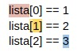

O que são listas (vetores)? Como criar uma lista? Como as listas armazenam dados? Para que é usada uma lista?
Vetores são estruturas de dados homogêneas, significando que apresentam somente dados do mesmo tipo,
e unidimensionais, indicando que são organizadas em índices de uma única dimensão (o que difere de matrizes, por
exemplo).
Em python, as chamadas Listas são utilizadas para armazenar uma série de valores em uma única
variável, e elas apresentam a seguinte sintaxe:
lista = [1, 2, 3, 4, 5]
O índice associado às listas é iniciado no número 0 o que faz com que cada elemento seja contado a partir daí, e cria a seguinte relação:
 A sintaxe acima, utilizada para checar o conteúdo de cada índice da lista, é organizada de acordo com
o nome da variável que corresponde à lista (vermelho), o índice procurado (amarelo) e o valor armazenado (azul).
Note que os dados acima são booleanos, e todos apresentam o valor True.
Listas também podem estar contidas dentro de outras listas, o que faz com que não seja necessário
armazenar somente um único valor em cada posição da lista original. Exemplo:
lista = [1, [2,3], 4]
lista[0] == 1
lista[1] == [2, 3]
lista[2] == 4
É possível alterar o valor de um elemento de uma lista de forma similar àquela utilizada para checar o valor:
lista[0] = 9
Agora, o valor armazenado na posição 0 da lista seria 9. Note que para definir um valor novo é
utilizado um único sinal de igualdade, enquanto para checar se um valor está correto usa-se o sinal de igualdade
duplo ‘==’.
Para acessar o valor de um índice em uma lista é necessário somente indicar o nome da lista e o
índice a ser acessado:
lista[0]
Com isso, é possível visualizar esse valor utilizando o método print:
print(lista[0])
Vetores e matrizes são, na prática, banco de dados, assim como o MySQL ou o MongoDB. Vamos supor que uma lanchonete necessita armazenar os produtos que vende e seus respectivos valores. Para resolver este problema, ignorando a construção da interface, um código muito simples pode ser construído. É necessário uma lista “produtoValor”, que armazene, para cada item, a variável “produto” e “preço”. O resultado é como segue:
def adicionaItem(produto, preco):
produtoValor.append([produto, preco])
produtoValor = []
desligado = False
while not desligado:
print("Conferir lista - 1\nAdicionar item - 2\nFechar sistema - 3\n")
opcao = int(input())
while opcao > 3 or opcao < 1:
opcao = int(input())
if(opcao == 1):
print(produtoValor, end="\n")
elif(opcao == 2):
produto = input("Digite o produto: ")
valor = input("Digite o valor (adicionar R$): ")
adicionaItem(produto, valor)
else:
desligado = True
print(produtoValor)
O código acima, obviamente, seria mais bem trabalhado em uma situação real - ou até mesmo substituído por um banco de dados e uma interface gráfica -, no entanto, podemos perceber a utilidade das listas e como elas são aplicadas na prática.